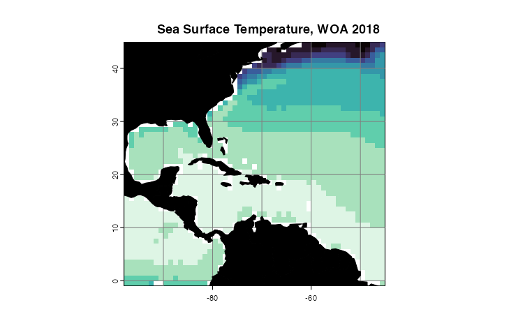
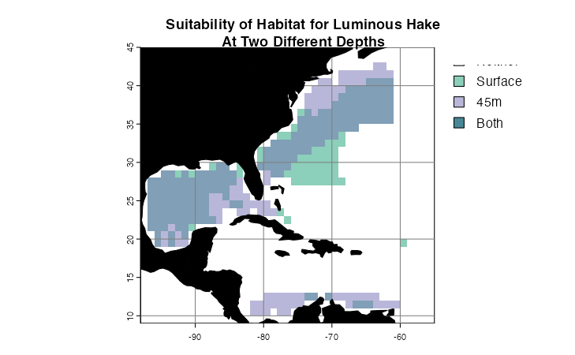
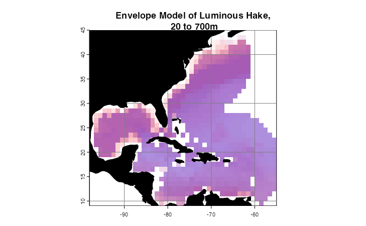

4. Visualization Tools
Hannah L. Owens
Carsten Rahbek
2024-01-24
Source:vignettes/d_Visualization.Rmd
d_Visualization.RmdIntroduction
voluModel contains several functions to generate
formatted maps of rasters and points automatically. This was to aid us
in cleanly visualizing large numbers of maps efficiently using
ggplot2 (Wickam, 2016) and lattice (Sarkar,
2008) functionality. While there are quite a few features available in
these functions, they were designed with fairly specific use cases in
mind. You are welcome to gut the functions and rewrite them for your own
custom needs.
The data I will be using for the demos in this tutorial will be
loaded and analyzed first. The Luminous Hake occurrence points, which
you can see in the data
sampling tutorial, were downloaded via R (R Core Team, 2020) from
GBIF (Chamberlain et al., 2021; Chamberlain and Boettiger,
2017) and OBIS (Provoost and Bosch, 2019) via occCite
(Owens et al., 2021). The simple envelope model is based on two
environmental datasets from the World Ocean Atlas (Garcia et
al., 2019): temperature (Locarnini et al., 2018) and
apparent oxygen utilization (AOU; Garcia et al., 2019). For
more details on how to process environmental data, see the
raster data tutorial. For the workflow used to generate the niche
envelopes, refer to the
introduction vignette.
library(voluModel) # Because of course
library(ggplot2) # For fancy plotting
library(viridisLite) # For high-contrast plotting palettes
library(dplyr) # To filter data##
## Attaching package: 'dplyr'## The following objects are masked from 'package:stats':
##
## filter, lag## The following objects are masked from 'package:base':
##
## intersect, setdiff, setequal, union## terra 1.7.65## Linking to GEOS 3.11.0, GDAL 3.5.3, PROJ 9.1.0; sf_use_s2() is TRUE
# Load data
oxygenSmooth <- rast(system.file("extdata/oxygenSmooth.tif",
package='voluModel'))
occs <- read.csv(system.file("extdata/Steindachneria_argentea.csv",
package='voluModel'))
# Temperature
td <- tempdir()
unzip(system.file("extdata/woa18_decav_t00mn01_cropped.zip",
package = "voluModel"),
exdir = paste0(td, "/temperature"), junkpaths = T)
temperature <- vect(paste0(td, "/temperature/woa18_decav_t00mn01_cropped.shp"))
# Creating a SpatRaster vector
template <- centerPointRasterTemplate(temperature)
tempTerVal <- rasterize(x = temperature, y = template, field = names(temperature))
# Get names of depths
envtNames <- gsub("[d,M]", "", names(temperature))
envtNames[[1]] <- "0"
names(tempTerVal) <- envtNames
temperature <- tempTerVal
# Oxygen processing
names(oxygenSmooth) <- names(temperature)
# Clean points ----
occurrences <- occs %>% dplyr::select(decimalLongitude, decimalLatitude, depth) %>%
distinct() %>% filter(dplyr::between(depth, 1, 2000))
# Gets the layer index for each occurrence by matching to depth
layerNames <- as.numeric(names(temperature))
occurrences$index <- unlist(lapply(occurrences$depth,
FUN = function(x) which.min(abs(layerNames - x))))
indices <- unique(occurrences$index)
downsampledOccs <- data.frame()
for(i in indices){
tempPoints <- occurrences[occurrences$index==i,]
tempPoints <- downsample(tempPoints, temperature[[1]], verbose = FALSE)
tempPoints$depth <- rep(layerNames[[i]], times = nrow(tempPoints))
downsampledOccs <- rbind(downsampledOccs, tempPoints)
}
occsWdata <- downsampledOccs[,c("decimalLatitude", "decimalLongitude", "depth")]
# Extract data ----
occsWdata$temperature <- xyzSample(occs = occsWdata, temperature)## Using decimalLongitude, decimalLatitude, and depth
## as x, y, and z coordinates, respectively.
occsWdata$AOU <- xyzSample(occs = occsWdata, oxygenSmooth)## Using decimalLongitude, decimalLatitude, and depth
## as x, y, and z coordinates, respectively.
occsWdata <- occsWdata[complete.cases(occsWdata),]
# Land shapefile
land <- rnaturalearth::ne_countries(scale = "small", returnclass = "sf")[1]
# Study region
studyRegion <- marineBackground(occsWdata, buff = 1000000)## Using decimalLongitude and decimalLatitude
## as x and y coordinates, respectively.
# Get limits
tempLims <- quantile(occsWdata$temperature,c(0, 1))
aouLims <- quantile(occsWdata$AOU,c(0, 1))
# Reclassify environmental bricks to presence/absence
temperaturePresence <- classify(temperature,
rcl = matrix(c(-Inf,tempLims[[1]],0,
tempLims[[1]], tempLims[[2]], 1,
tempLims[[2]], Inf, 0),
ncol = 3, byrow = TRUE))
AOUpresence <- classify(oxygenSmooth,
rcl = matrix(c(-Inf, aouLims[[1]],0,
aouLims[[1]], aouLims[[2]], 1,
aouLims[[2]], Inf, 0),
ncol = 3, byrow = TRUE))
# Put it all together
envelopeModel3D <- temperaturePresence * AOUpresence
envelopeModel3D <- mask(crop(envelopeModel3D, studyRegion),
mask = studyRegion)
names(envelopeModel3D) <- names(temperature)
rm(AOUpresence, downsampledOccs, occurrences, temperaturePresence,
tempPoints, aouLims, envtNames, i, indices, layerNames, tempLims)Plotting points
There are two functions in voluModel for plotting
occurrence points. The first, pointMap(), plots a single
set of horizontal geographic points. The title generated is the species
name the user supplies and a count of the number of points that have
been plotted.
pointMap(occs = occs, land = land, landCol = "black", spName = "Steindachneria argentea",
ptSize = 2, ptCol = "orange")
The second, pointCompMap() plots a map that maps the
extents of two sets of horizontal geographic points in different colors.
This might be useful, for example, if you want to compare a raw dataset
to a cleaned dataset. If any points overlap, they can be plotted as a
third color.
pointCompMap(occs1 = occs, occs1Col = "red", occs1Name = "Raw",
occs2 = occsWdata, occs2Col = "orange", occs2Name = "Clean",
spName = "Steindachneria argentea", agreeCol = "purple",
land = land, landCol = "black", ptSize = 2, verbose = FALSE)Plotting rasters
If you have a horizontal raster you would like to map that contains
continuous data, the function for you might be
oneRasterPlot(). It is a wrapper around
spplot() from sp (Pebesma and Bivand, 2005;
Bivand et al. 2013) that implements the high-contrast,
colorblind-friendly color palettes offered in viridis()
from viridisLite (Garnier et al., 2021). The
function optionally takes arguments to the spplot() and
viridis() functions (so, for example, you can choose a
palette other than the default).
oneRasterPlot(rast = temperature[[1]],
land = land, title = "Sea Surface Temperature, WOA 2018",
landCol = "black", n = 11, option = "mako",
varName = "Temperature")
Suppose you want to compare the extents of two presence-absence rasters–perhaps you are comparing two species distribution model method outputs, or comparing potential distributions at two different depths. We have a function for that, too.
rasterComp(rast1 = envelopeModel3D[[1]], rast1Name = "Surface",
rast2 = envelopeModel3D[[10]], rast2Name = "45m",
land = land, landCol = "black",
title = "Suitability of Habitat for Luminous Hake\nAt Two Different Depths")
Of course, 3D models such as the ones voluModel is
designed to help you produce, are difficult to visualize. We have given
it a try, though. plotLayers() plots a transparent layer of
suitable habitat for each depth layer. The redder the color, the
shallower the layer, the bluer, the deeper. The more saturated the
color, the more layers with suitable habitat. Here, I am plotting
suitability from 20 to 700 m, the depth range of occurrences used to
train the envelope model.
layerNames <- as.numeric(names(envelopeModel3D))
occsWdata$index <- unlist(lapply(occsWdata$depth, FUN = function(x) which.min(abs(layerNames - x))))
indices <- unique(occsWdata$index)
layerPlot <- plotLayers(envelopeModel3D[[min(indices):max(indices)]],
title = "Envelope Model of Luminous Hake,\n 20 to 700m",
land = land, landCol = "black")
Tidying up
Last, we need to close the temporary directory we opened when we opened the data.
unlink(td, recursive = T)References
Bakis Y (2021): TU_Fish. v1.1. No organization. Dataset/Occurrence. https://fishair.org/ipt/resource?r=tu_fish&v=1.1 Accessed via OBIS on 2020-11-04.
Bentley A (2022). KUBI Ichthyology Collection. Version 17.80. University of Kansas Biodiversity Institute. DOI: 10.15468/mgjasg. Accessed via GBIF on 2020-10-13.
Bentley A (2022). KUBI Ichthyology Tissue Collection. Version 18.68. University of Kansas Biodiversity Institute. DOI: 10.15468/jmsnwg. Accessed via GBIF on 2020-10-13.
Buckup P A (2022). Coleção Ictiológica (MNRJ), Museu Nacional (MN), Universidade Federal do Rio de Janeiro(UFRJ). Version 157.1487. Museu Nacional / UFRJ. DOI: 10.15468/lluzfl. Accessed via GBIF on 2020-10-13.
Catania D, Fong J (2022). CAS Ichthyology (ICH). Version 150.300. California Academy of Sciences. DOI: 10.15468/efh2ib. Accessed via GBIF on 2020-10-13.
Chakrabarty P (2019). LSUMZ (LSU MNS) Fishes Collection. Version 2.2. Louisiana State University Museum of Natural Science. DOI: 10.15468/gbnym3. Accessed via GBIF on 2020-10-13.
Chamberlain S, Barve V, Mcglinn D, Oldoni D, Desmet P, Geffert L, Ram K (2021). rgbif: Interface to the Global Biodiversity Information Facility API. R package version 3.6.0, https://CRAN.R-project.org/package=rgbif.
Chamberlain S, Boettiger C (2017). “R Python, and Ruby clients for GBIF species occurrence data.” PeerJ PrePrints. DOI: 10.7287/peerj.preprints.3304v1.
Davis Rabosky AR, Cox CL, Rabosky DL, Title PO, Holmes IA, Feldman A, McGuire JA (2016). Coral snakes predict the evolution of mimicry across New World snakes. Nature Communications 7:11484.
Espinosa Pérez H, Comisión nacional para el conocimiento y uso de la biodiversidad C (2021). Computarización de la Colección Nacional de Peces del Instituto de Biología UNAM. Version 1.9. Comisión nacional para el conocimiento y uso de la biodiversidad. DOI: 10.15468/zb2odl. Accessed via GBIF on 2020-10-13.
Frable B (2019). SIO Marine Vertebrate Collection. Version 1.7. Scripps Institution of Oceanography. DOI: 10.15468/ad1ovc. Accessed via GBIF on 2020-10-13.
Fishnet2 Portal, http://www.fishnet2.net, [Access date] Accessed via OBIS on 2020-11-04.
Froese, R. and D. Pauly. Editors. 200x. FishBase. World Wide Web electronic publication. www.fishbase.org, version (xx/200x). Accessed via OBIS on 2020-11-04.
Gall L (2021). Vertebrate Zoology Division - Ichthyology, Yale Peabody Museum. Yale University Peabody Museum. DOI: 10.15468/mgyhok. Accessed via GBIF on 2020-10-13.
García, CB, and Duarte, LO, ‘Columbian Caribbean Sea’, in J.H. Nicholls (comp.) HMAP Data Pages https://oceanspast.org/hmap_db.php Accessed via OBIS on 2020-11-04.
Garcia HE, Weathers K, Paver CR, Smolyar I, Boyer TP, Locarnini RA, Zweng MM, Mishonov AV, Baranova OK, Seidov D, Reagan JR (2018). World Ocean Atlas 2018, Volume 3: Dissolved Oxygen, Apparent Oxygen Utilization, and Oxygen Saturation. A Mishonov Technical Ed.; NOAA Atlas NESDIS 83, 38pp.
Garnier S, Ross N, Rudis R, Camargo AP, Sciaini M, Scherer C (2021). Rvision - Colorblind-Friendly Color Maps for R. R package version 0.6.2.
GBIF.org (24 September 2020) GBIF Occurrence Download DOI: 10.15468/dl.efuutj.
Grant S, McMahan C (2020). Field Museum of Natural History (Zoology) Fish Collection. Version 13.12. Field Museum. DOI: 10.15468/alz7wu. Accessed via GBIF on 2020-10-13.
Harvard University M, Morris P J (2022). Museum of Comparative Zoology, Harvard University. Version 162.296. Museum of Comparative Zoology, Harvard University. DOI: 10.15468/p5rupv. Accessed via GBIF on 2020-10-13.
Hendrickson D A, Cohen A E, Casarez M J (2022). University of Texas, Biodiversity Center, Ichthyology Collection (TNHCi). Version 5.175. University of Texas at Austin, Biodiversity Collections. DOI: 10.15468/h8gxdr. Accessed via GBIF on 2020-10-13.
INVEMAR. SIBM en línea: Sistema de Información sobre Biodiversidad Marina. Santa Marta: Instituto de investigaciones Marinas y Costeras José Benito Vives de Andréis,. http://www.invemar.org.co/siam/sibm/index.htm Accessed via OBIS on 2020-11-04.
Locarnini RA, Mishonov AV, Baranova OK, Boyer TP, Zweng MM, Garcia HE, Reagan JR, Seidov D, Weathers K, Paver CR, Smolyar I (2018). World Ocean Atlas 2018, Volume 1: Temperature. A. Mishonov Technical Ed.; NOAA Atlas NESDIS 81, 52pp.
McLean, M.W. (2014). Straightforward Bibliography Management in R Using the RefManager Package. NA, NA. https://arxiv.org/abs/1403.2036.
McLean, M.W. (2017). RefManageR: Import and Manage BibTeX and BibLaTeX References in R. The Journal of Open Source Software.
Mertz W (2021). LACM Vertebrate Collection. Version 18.9. Natural History Museum of Los Angeles County. DOI: 10.15468/77rmwd. Accessed via GBIF on 2020-10-13.
Nakae M, Shinohara G (2018). Fish collection of National Museum of Nature and Science. National Museum of Nature and Science, Japan. Occurrence dataset DOI: 10.15468/w3dzv1 accessed via GBIF.org on yyyy-mm-dd. Accessed via OBIS on 2020-11-04.
Natural History Museum (2021). Natural History Museum (London) Collection Specimens. DOI: 10.5519/0002965. Accessed via GBIF on 2020-10-13.
National Museum of Natural History, Smithsonian Institution NMNH Fishes Collection Database. National Museum of Natural History, Smithsonian Institution, 10th and Constitution Ave. N.W., Washington, DC 20560-0193, 2007. Accessed via OBIS on 2020-11-04.
Norén M, Shah M (2017). Fishbase. FishBase. DOI: 10.15468/wk3zk7. Accessed via GBIF on 2020-10-13.
Norton B, Hogue G (2021). NCSM Ichthyology Collection. Version 22.8. North Carolina State Museum of Natural Sciences. DOI: 10.36102/dwc.1. Accessed via GBIF on 2020-10-13.
Nychka D, Furrer R, Paige J, Sain S (2021). “fields: Tools for spatial data.” R package version 13.3, <URL: https://github.com/dnychka/fieldsRPackage>.
Orrell T, Informatics Office (2021). NMNH Extant Specimen Records (USNM, US). Version 1.49. National Museum of Natural History, Smithsonian Institution. DOI: 10.15468/hnhrg3. Accessed via GBIF on 2020-10-13.
Owens H, Merow C, Maitner B, Kass J, Barve V, Guralnick R (2021). occCite: Querying and Managing Large Biodiversity Occurrence Datasets_. doi: 10.5281/zenodo.4726676 (URL: DOI: 10.5281/zenodo.4726676), R package version 0.4.9.9000, (<URL: https://CRAN.R-project.org/package=occCite>).
Pebesma, E.J., R.S. Bivand (2005). Classes and methods for spatial data in R. R News 5 (2), https://cran.r-project.org/doc/Rnews/.
Prestridge H (2021). Biodiversity Research and Teaching Collections - TCWC Vertebrates. Version 9.4. Texas A&M University Biodiversity Research and Teaching Collections. DOI: 10.15468/szomia. Accessed via GBIF on 2020-10-13.
Provoost P, Bosch S (2019). “robis: R Client to access data from the OBIS API.” Ocean Biogeographic Information System. Intergovernmental Oceanographic Commission of UNESCO. R package version 2.1.8, https://cran.r-project.org/package=robis.
Pugh W (2021). UAIC Ichthyological Collection. Version 3.3. University of Alabama Biodiversity and Systematics. DOI: 10.15468/a2laag. Accessed via GBIF on 2020-10-13.
R Core Team (2017). R: A language and environment for statistical computing. R Foundation for Statistical Computing, Vienna, Austria. URL https://www.R-project.org/.
Robins R (2021). UF FLMNH Ichthyology. Version 117.342. Florida Museum of Natural History. DOI: 10.15468/8mjsel. Accessed via GBIF on 2020-10-13.
Bivand RS, Pebesma E, Gomez-Rubio V (2013). Applied spatial data analysis with R, Second edition. Springer, NY. https://asdar-book.org/
Sarkar D (2008). Lattice: Multivariate Data Visualization with R. Springer, New York. ISBN 978-0-387-75968-5
Tavera L, Tavera M. L (2021). Biodiversidad de los recursos marinos y costeros entre Cartagena y el Golfo de Urabá, Caribe colombiano. Version 2.4. Instituto de Investigaciones Marinas y Costeras - Invemar. DOI: 10.15472/d2jusp. Accessed via GBIF on 2020-10-13.
UNIBIO, IBUNAM. CNPE/Coleccion Nacional de Peces. DOI: 10.15468/o5d48z. Accessed via GBIF on 2020-10-13.
Wagner M (2017). MMNS Ichthyology Collection. Mississippi Museum of Natural Science. DOI: 10.15468/4c3qeq. Accessed via GBIF on 2020-10-13.
Werneke D (2019). AUM Fish Collection. Version 8.1. Auburn University Museum. DOI: 10.15468/dm3oyz. Accessed via GBIF on 2020-10-13.
Wickham H (2016). ggplot2: Elegant Graphics for Data Analysis. Springer-Verlag New York.